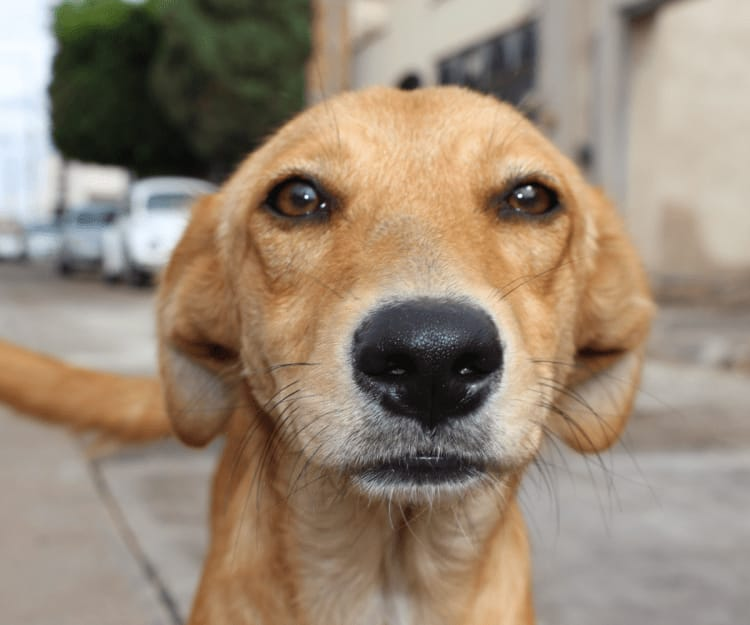
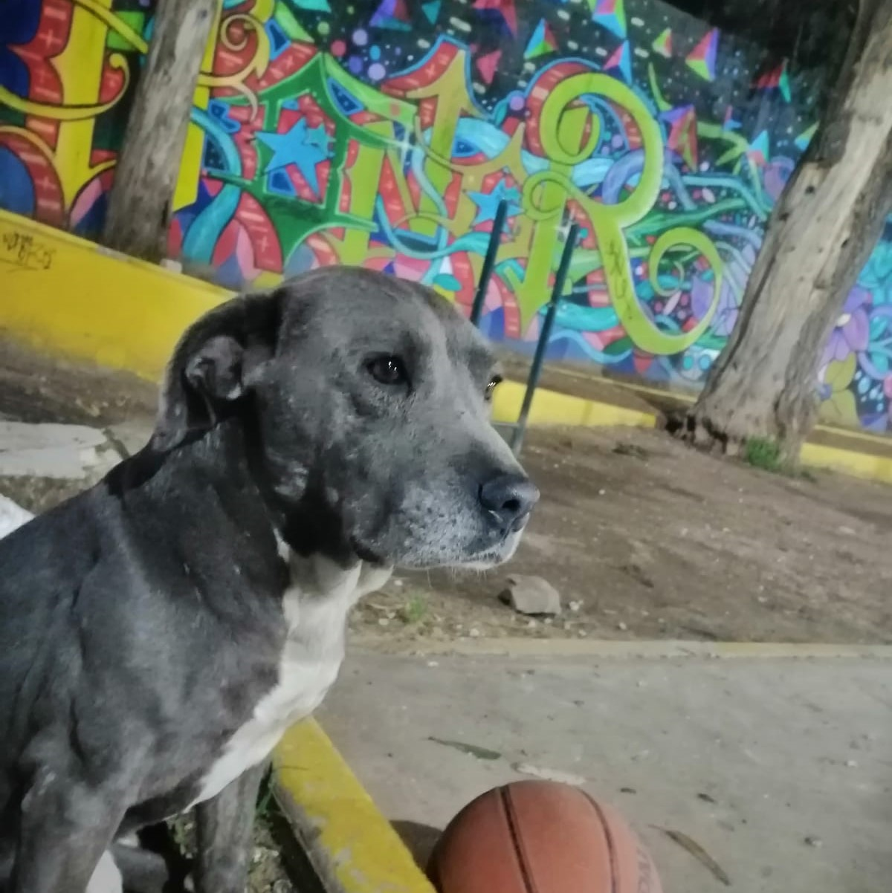
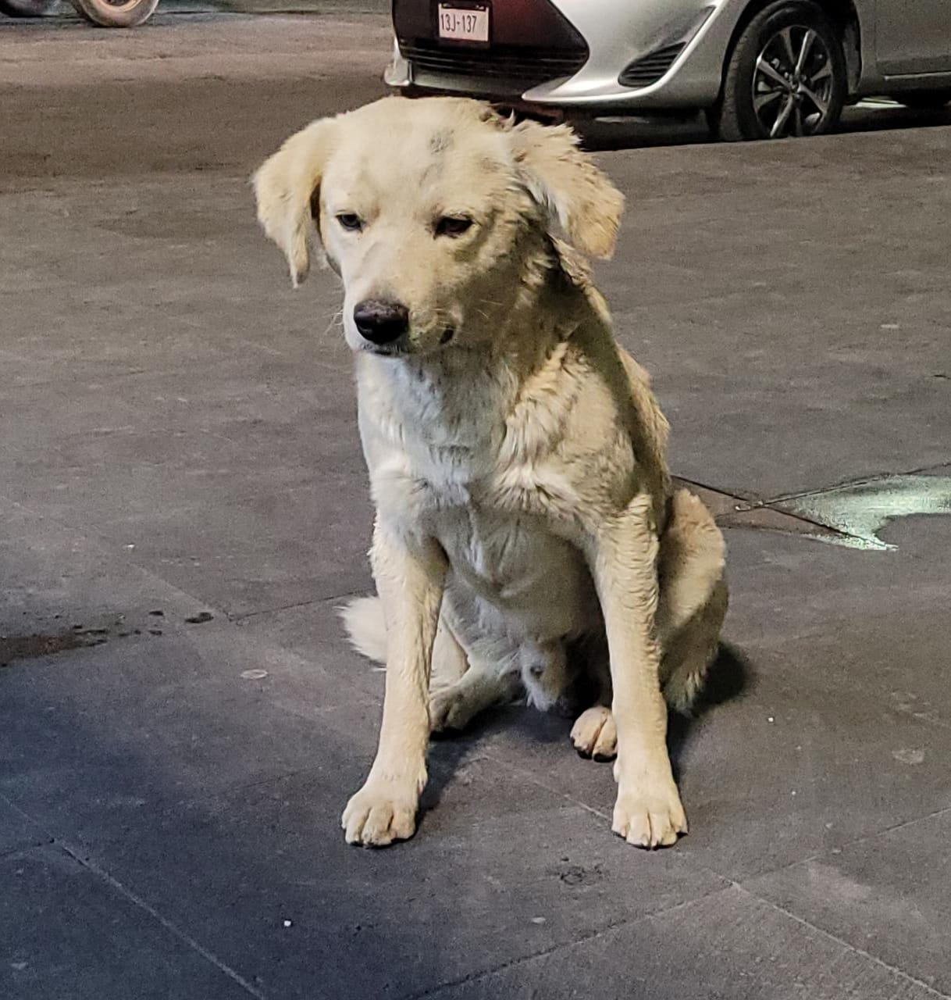
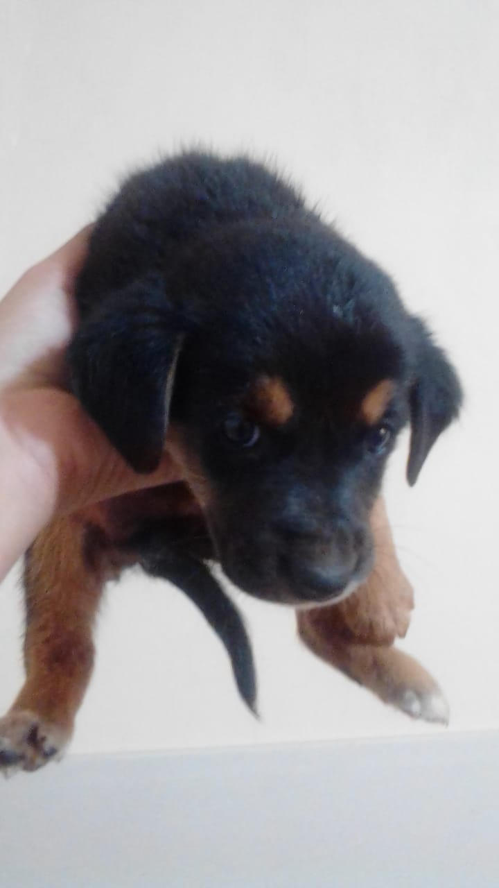

| Jennifer Daniela Corona Carrazco Daniela Corona es una artista mexicana residente de Teotihuacán, apasionada por la fotografía e imagen digital. Su enfoque artístico se basa en la abstracción y la experimentación, explorando las posibilidades creativas de la fotografía a través de técnicas como el uso de dobles exposiciones, manipulación digital y la exploración de texturas y colores que desafían la percepción del espectador y lo invitan a contemplar la imagen desde diferentes perspectivas. Su interés por la fotografía documental y temas correspondientes con una filosofía hacia las problemáticas ambientales y la relación entre el ser humano y su entorno nos lleva a poder conectar con sus propias piezas y obras. Más allá de la fotografía, ha trabajado en proyectos audiovisuales donde ha explorado la narrativa visual en la elaboración de cortometrajes y el uso de la imagen en movimiento además de piezas de arte sonoro recientemente presenta una de obra en colaboración sobre la problemática de perros en situación de calle o abandono titulada “patitas en la calle”. |
|
Brisa Quevedo Artista orgullosa de raíces michoacanas, es una artista enfocada principalmente en el campo audiovisual que se encarga de intentar dar a las personas una nueva visión, cambiando el panorama a través de los distintos cortometrajes, fotografías y videos que ha realizado. Aunque de vez en cuando se permite tomar el pincel y darle un poco de color a lo que se le ponga enfrente. En general, las posibilidades de expresión que presenta son distintas con cada tema experimentando y corriendo riesgos. Cada trabajo es una combinación entre el mundo surrealista en su cabeza y los detalles que la vida le pone enfrente. Cada imagen, y video se ha ido creando con metáforas, reflexiones y realidades que sirven como invitación a adentrarse a los temas que le interesan. |
|
Dhania Valeria Quiroz Aguilera Valeria es una artista que en su corta carrera artística ha elaborado proyectos como dibujos, pinturas, videos editados y páginas web creadas con diferentes propósitos a partir de distintos contextos y necesidades de la obra y el problema o el beneficio que se busca resaltar, siendo obras inéditas la mayoría de estas. Como artista Valeria está enfocada en usar al arte como un método de expresión personal con el fin de acercarse a los demás y alejarlos por un momento de sus ajetreadas vida, ya que en un mundo tan acelerado necesitamos tomarnos el tiempo disfrutar de aquellas cosas que nos hacen feliz y que quizá ni sean indispensables, pero que son capaces de sacarle una sonrisa a los demás, o en su defecto, transmitir un sentimiento que se quiere compartir, por eso que se enfoca en los sentimientos de los demás como punto de partida para crear obras que los lleve a un mundo en donde sientan que nada de lo demás importa. También se interesa en la creación de videojuegos, la edición de videos y la animación, usándolos como método de distracción y relajación. |
|
 Soy Gerardo Arcos, un artista digital apasionado por generar espacios que saquen a las personas de su cotidianidad y las inviten a reflexionar. A través de técnicas plásticas como la pintura y la escultura, así como del modelado 3D y la animación, busco explorar las fronteras entre lo físico y lo virtual. Mi práctica artística se caracteriza por la experimentación constante. Recientemente, he estado explorando el mundo de Resolume Arena, una herramienta versátil para la creación de visuales. A través de esta plataforma, combino elementos visuales, luz y movimiento para generar experiencias inmersivas y transformadoras. Mis influencias artísticas incluyen a figuras como Francisco Toledo, quien no solo dejó un legado artístico significativo, sino que también se dedicó a la defensa del patrimonio cultural de Oaxaca. Admiro su compromiso con la preservación y su capacidad para transmitir un mensaje a través de su arte. Otro referente es Luis Estrada, cuyo trabajo cinematográfico visibiliza problemas sociales y políticos reales en México, utilizando el cine como una herramienta de denuncia y concientización. En mi proceso creativo, me sumerjo en la experimentación, permitiendo que las ideas y conceptos se desarrollen de forma orgánica. Me impulsa la necesidad de generar un impacto emocional en el espectador, de provocar preguntas y abrir espacios para la reflexión. A través de mis obras, busco crear una conexión íntima con quienes las observan, invitándolos a explorar nuevas perspectivas y cuestionar su realidad. En el futuro, aspiro a seguir expandiendo mi práctica artística, explorando nuevas tecnologías y medios que me permitan ampliar los límites de mi expresión creativa. Mi objetivo es contribuir al diálogo artístico y social, generando obras que provoquen cambios y promuevan la reflexión en nuestra sociedad. |